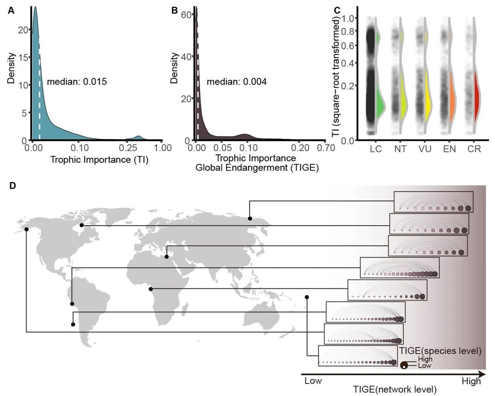
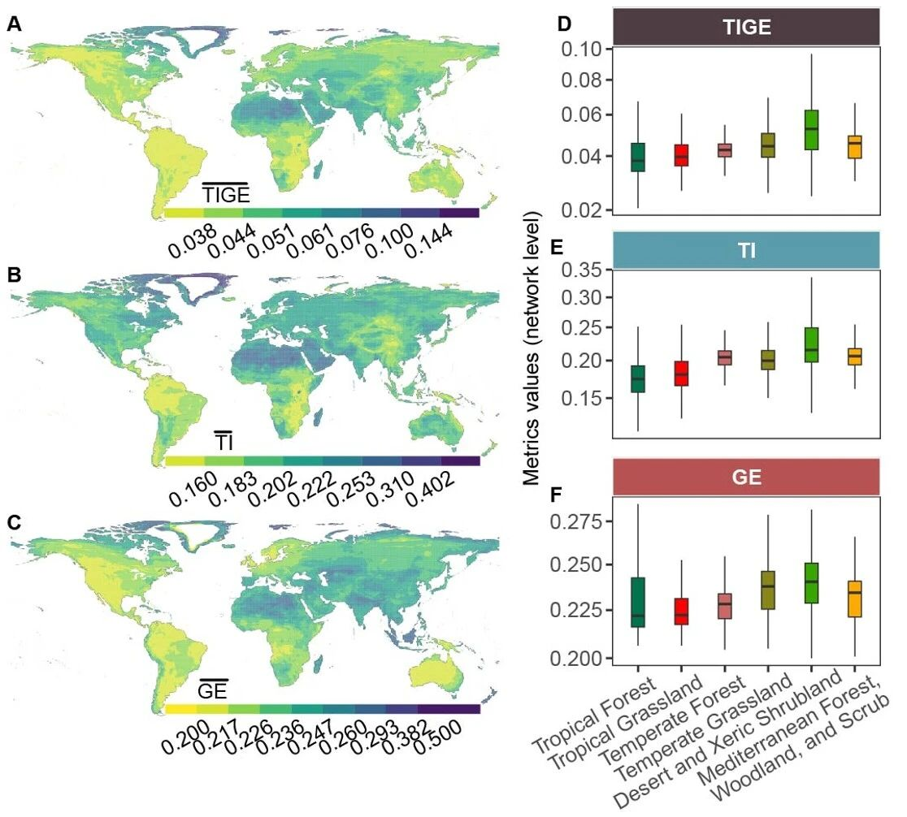
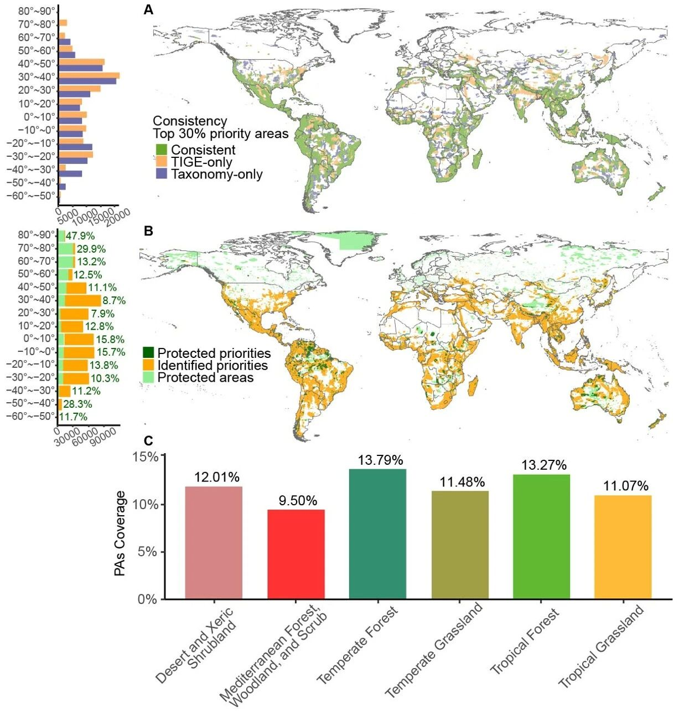

从“爱知目标”提出的保护全球17%的陆域面积到“昆蒙框架”提出的保护30%陆域面积，确定保护优先区域是全球生物多样性保护的核心之一。传统的保护优先区规划多基于多样性（物种多样性、功能多样性及遗传多样性等）以及物种的灭绝风险等维度的信息，却较少考虑物种间相互作用与营养结构对生态系统功能与服务（如自上而下调控、养分循环）的支撑作用。然而，保护工作不应只局限于防止物种灭绝或维持多样性，也需要通过设计和规划景观促进物种间的相互作用，从而维持重要的生态系统功能与过程，并最终提升保护成效。
食物网作为生态系统中物质循环和能量流动的重要载体，为刻画物种在生态系统中的功能角色提供了绝佳的条件。如果我们能够在保护规划中更多地关注生态网络所揭示的“关键物种”，或许有助于在维持物种多样性的基础上，进一步支撑起重要的生态系统功能与过程。兰州大学生态学院网络生态学（严川）研究团队及其合作者，利用基于深度学习算法构建的包含25000余种陆生脊椎动物的全球食物网数据（Hao et al., 2025, Global Change Biology; DOI: 10.1111/gcb.70061），评估了物种在食物网中的“营养重要性”（TI，Trophic Importance），并结合IUCN红色名录物种濒危等级信息（“全球濒危性”），构建了“营养重要性-全球濒危性”（TIGE，Trophic Importance Global Endangerment）指数，用以识别具有重要生态系统功能且高度受胁的物种。此外，研究团队基于系统保护规划，评估了未来不同保护地覆盖情景下陆生脊椎动物保护优先区的分布及其受当前保护地的覆盖状况。

研究发现，物种的“营养重要性”与其濒危等级并无显著相关性，且网络水平的“营养重要性”和“全球濒危性”与网络水平的“营养重要性-全球濒危性”在全球范围内呈现出显著的空间分异。这意味着仅基于濒危等级的保护规划可能会遗漏那些对维持生态网络能量流动及其稳定性至关重要的“关键物种”。

基于“营养重要性-全球濒危性”指数的保护优先区规划，识别出了与传统方法（如仅基于物种多样性及特有性）不同的优先保护区域。此外，研究还发现，当前的保护地网络对各个生物群系中保护优先区域的覆盖率普遍偏低。

该研究强调了采用生态网络方法，将物种的功能角色应用于大尺度保护规划的重要性和潜在价值，为实现更有效的生物多样性保护提供了新的视角和方法。
本研究以“Integrating trophic importance into conservation of terrestrial vertebrates”刊登于美国科学院院刊（PNAS）。兰州大学生态学院博士后郝希阳为第一作者，严川教授为通讯作者。美国加州大学戴维斯分校Marcel Holyoak教授，已毕业研究生张志成参与了本项研究。论文的研究工作得到了国家自然科学基金、中国博士后科学基金、教育部基础学科和交叉学科突破计划、草种创新与草地农业生态系统全国重点实验室（兰州大学）以及青海省科学技术厅等项目的资助。